...MALOWAC...

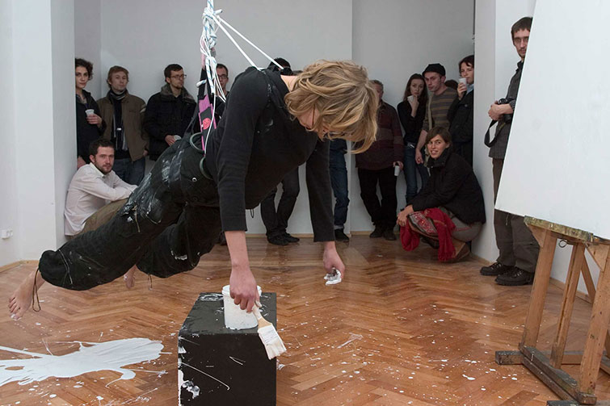
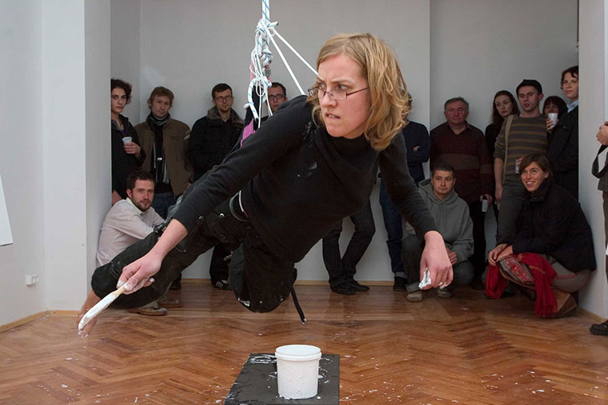
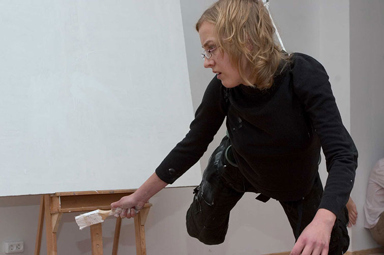
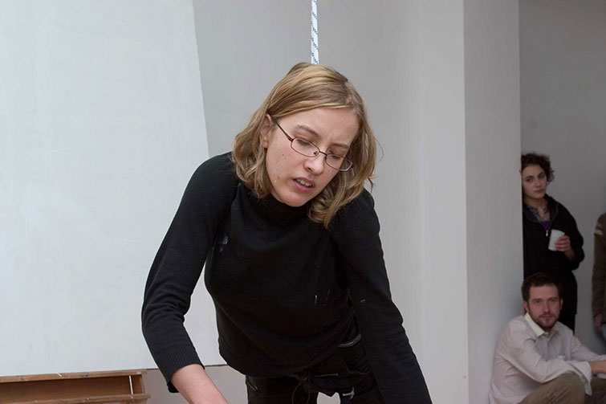
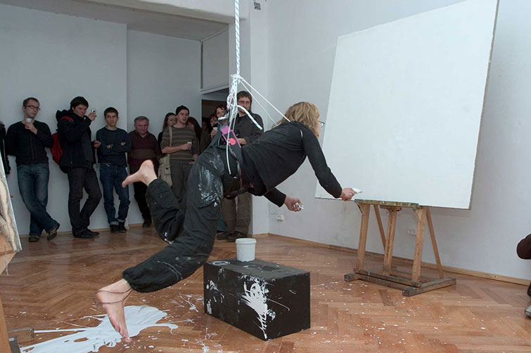
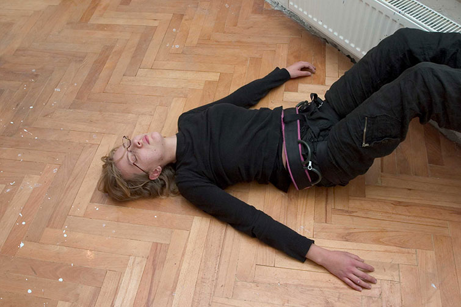
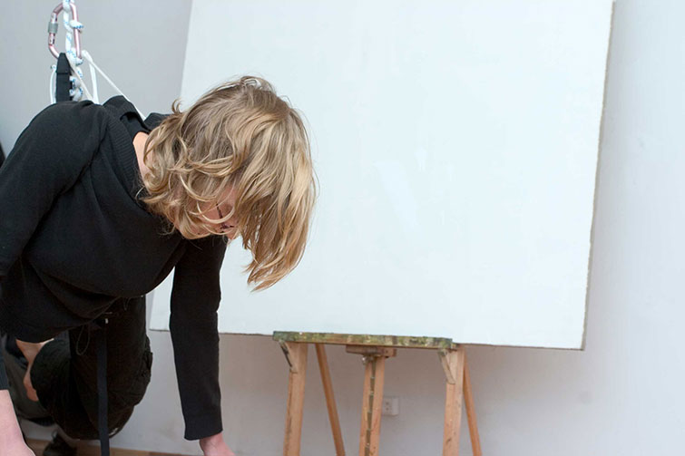
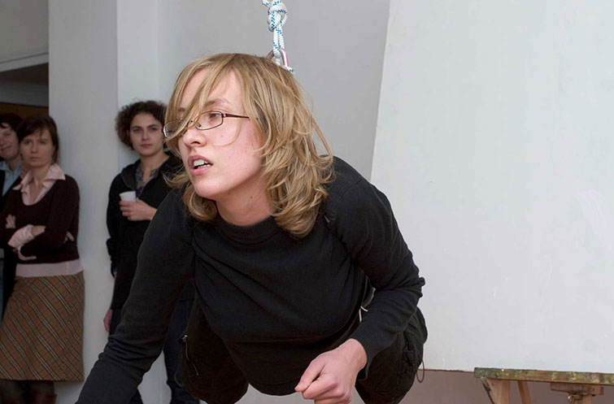
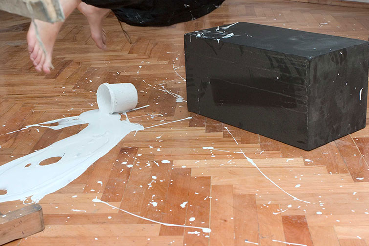
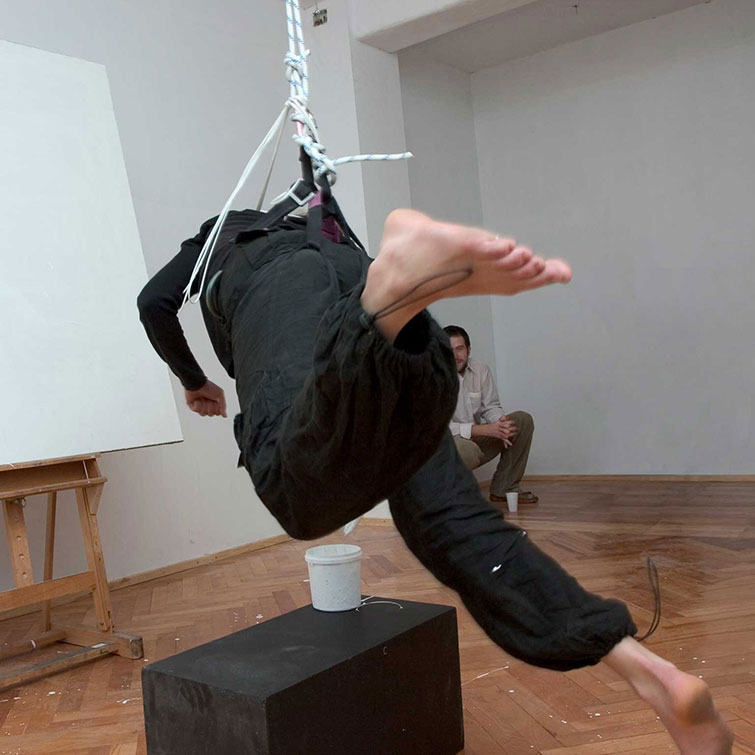
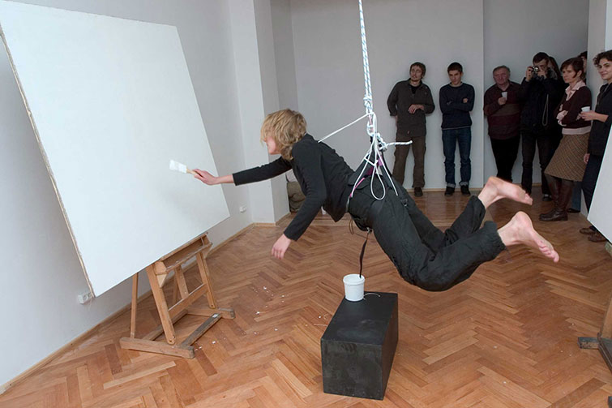
Moj pierwszy performance w zyciu, ktory wykonalam na II roku studiow. Dzialanie wyniknelo z niemozliwosci malowania w pracowniach ASP we Wroclawiu - zostalam wyrzucona na trawnik przed uczelnia przez jednego z profesorow ze wzgledu na zbyt duze plotno. Performance odbyl sie w nieistniejacej juz galerii !Sputnik we Wroclawiu w 2006 roku.
kamera: Michal Bieniek
foto: Daniel Chruszcz